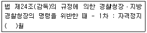
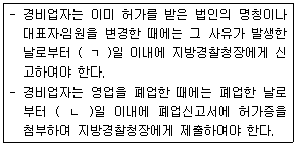
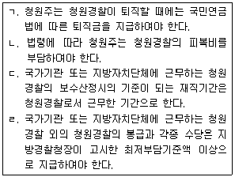
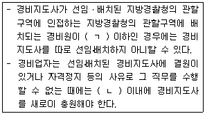

경비지도사-2차(경비업법) (2010-11-14 기출문제)
1. 경비업법령상 사용하는 용어의 정의로 옳지 않은 것은?
- 호송경비업무 − 운반중에 있는 현금⋅유가증권⋅귀금속⋅상품 그 밖의 물건에 대하여 도난⋅화재 등 위험발생을 방지하는 업무
- 특수경비업무 − 대통령령이 정하는 국가중요시설의 경비 및 도난⋅화재 그 밖의 위험발생을 방지하는 업무
- 경비지도사 − 경비원을 지도⋅감독 및 관리하는 자로서 일반경비지도사와 특수경비지도사로 구분
- 경비원 − 경비업자가 채용한 고용인으로 일반경비원과 특수경비원으로 구분
(정답률: 72%)

2. 경비업체보안업무관리규칙상 비밀취급업체선정 심사위원회에 관한 설명으로 옳은 것은?
- 위원은 지방경찰청장이 지명하는 경찰공무원과 민간전문가로 한다.
- 위원회의 의결은 재적위원 과반수 이상의 출석과 출석위원 과반수 이상의 찬성으로 한다.
- 위원회는 위원장과 부위원장을 포함하여 10인의 위원으로 구성한다.
- 지방경찰청장은 지방경찰청 생활안전과에 비밀취급업체선정 심사위원회를 구성ㆍ운영한다.
(정답률: 30%)
3. 경비업법령상 경비지도사 자격의 취소사유에 해당하지 않는 것은?
- 금고 이상의 형의 집행유예선고를 받고 그 유예기간중에 있는 경우
- 금고 이상의 형의 선고유예를 받고 그 유예기간중에 있는 경우
- 금고 이상의 실형의 선고를 받고 그 집행이 종료되거나 집행이 면제된 날부터 5년이 지나지 아니한 경우
- 경비지도사가 경비지도사자격증을 다른 사람에게 빌려주거나 양도한 경우
(정답률: 66%)
4. 청원경찰법령상 청원경찰의 직무에 관한 설명으로 옳은 것은?
- 청원경찰은 청원주와 관할경찰서장의 감독을 받아 그 경비구역만의 경비를 목적으로 필요한 범위에서 경찰관직무집행법에 따른 경찰관의 직무를 수행한다.
- 청원경찰은 자신이 배치된 기관의 경비 뿐 아니라 그 구역을 관할하는 경찰서장의 명에 따라 관할 경찰서의 경비업무를 보조하여야 한다.
- 복무에 관하여 청원경찰은 해당 사업장의 취업규칙에 따르지 않는다.
- 청원경찰은 청원주의 신청에 따라 배치되며, 청원주의 감독을 받는 것이 아니라 배치된 기관ㆍ시설 또는 사업장 등의 구역을 관할하는 경찰서장의 감독을 받는다.
(정답률: 95%)
5. 경찰관직무집행법령상의 내용에 관한 설명으로 옳지 않은 것은?
- 경찰관서에서는 보호조치를 할 수 없다.
- 피구호자가 휴대하고 있는 무기ㆍ흉기 등 위험을 야기할 수 있는 물건은 경찰관서에 임시로 영치를 할 수 있다.
- 위험발생방지조치를 한 경우에는 지체없이 이를 소속경찰관서의 장에게 보고하여야 하며, 보고를 받은 경찰관서의 장은 적당한 조치를 하여야 한다.
- 경찰장구라 함은 경찰관이 휴대하여 범인검거와 범죄진압등 직무수행에 사용하는 수갑ㆍ포승ㆍ경찰봉ㆍ방패등을 말한다.
(정답률: 52%)
6. 경비업법령상 경비지도사에 대한 자격정지처분의 기준에 대하여 ( )안에 들어갈 숫자로 알맞은 것은?

- 1
- 2
- 3
- 6
(정답률: 82%)
7. 청원경찰법령상의 내용에 관한 설명으로 옳지 않은 것은?
- 법령에 의한 청원경찰 임용의 신체조건 중 시력(교정시력을 포함)은 양쪽 눈이 각각 0.8 이상이어야 한다.
- 청원경찰의 배치를 받으려는 자는 대통령령으로 정하는 바에 따라 관할 지방경찰청장에게 청원경찰배치신청을 하여야 한다.
- 청원주가 청원경찰을 신규로 배치한 때에는 배치지를 관할하는 지방경찰청장에게 그 사실을 통보하여야 한다.
- 청원경찰이 직무수행으로 인하여 사망한 경우 청원주는 사망한 청원경찰의 유족에게 보상금을 지급하여야 한다.
(정답률: 79%)
8. 경비업체보안업무관리규칙상 신원조사에 관한 설명으로 옳지 않은 것은?
- 업체는 보안측정을 요청한 후 비밀작업에 종사하게 될 임직원에 대한 신원조사를 관할 경찰서장에게 요청하여야 한다.
- 지방경찰청 생활안전과 분임 보안담당관은 업체 임직원에 대한 신원조사를 실시하고 그 결과를 신원조회대장에 기록ㆍ관리한다.
- 단기 잡역종사자의 경우 작업을 위장하며 비밀이 노출되지 아니하도록 보안조치를 한 후 신원증명서를 받고 신원조사를 생략할 수 있다.
- 지방경찰청 생활안전과 분임 보안담당관은 신원조사 결과의 적합여부를 업체에 통보한다.
(정답률: 40%)
9. 경비업법령상 경비업을 영위하는 법인의 임원이 될 수 있는 경우는?
- 경비업법에 위반하여 벌금형의 선고를 받고 2년이 된 자가 특수경비업무를 수행하는 법인의 임원이 되는 경우
- 파산선고를 받고 복권되지 아니한 자가 시설경비업무를 수행하는 법인의 임원이 되는 경우
- 금고 이상의 형의 선고를 받고 그 형이 실효되지 아니한 자가 신변보호업무를 수행하는 법인의 임원이 되는 경우
- 호송경비업무를 수행하는 법인이 경비업법을 위반하여 허가가 취소된 경우, 그 당시 재직중이던 임원이 그 취소 후 1년만에 시설경비업무를 수행하는 법인의 임원이 되는 경우
(정답률: 65%)
10. 재난 및 안전관리기본법령상의 내용에 관한 설명으로 옳은 것은?
- 중앙긴급구조통제단에는 단장 1명을 두되, 소방방재청장이 단장이 된다.
- 시장ㆍ군수ㆍ구청장은 재난발생이 우려가 있는 경우 사람의 생명ㆍ신체에 대한 위해를 방지하기 위하여 필요하면 시ㆍ도지사의 동의를 얻어 당해 지역주민에게 대피명령을 발하여야 한다.
- 중앙안전관리위원회의 위원장은 대통령이 된다.
- 시ㆍ도지사는 시ㆍ도 재난 예보ㆍ경보 체계구축종합계획에 대한 사업시행계획을 매년 수립하여 행정안전부장관에게 제출하여야 한다.
(정답률: 20%)
11. 경비업법령상 경비업의 허가에 관한 설명으로 옳지 않은 것은?
- 경비업의 허가를 받은 법인이 도급받아 행하고자 하는 경비업무를 변경하는 경우에는 그 법인의 주사무소 소재지 관할 지방경찰청장의 허가를 받아야 한다.
- 경비업을 영위하고자 하는 법인은 대통령령으로 정하는 경비인력ㆍ자본금ㆍ시설 및 장비를 갖추지 못한 경우에는 허가신청시 그에 대한 확보계획서를 제출한 후 허가를 받은 날부터 1월 이내에 필요한 법정시설 등을 갖추고 지방경찰청장의 확인을 받아야 한다.
- 경비업의 허가여부를 결정하는 경우에 대표자ㆍ임원의 경력 및 신용 등은 검토의 대상이 된다.
- 특수경비업의 허가기준 중 경비인력은 특수경비원 20명 이상, 자본금은 5억원 이상을 갖추어야 한다.
(정답률: 46%)
12. 경비업법령상의 내용에 관한 설명으로 옳지 않은 것은?(오류 신고가 접수된 문제입니다. 반드시 정답과 해설을 확인하시기 바랍니다.)
- 경비지도사시험을 실시하고자 하는 때에는 응시자격ㆍ시험과목ㆍ시험일시ㆍ시험장소 및 선발예정인원 등을 시험시행일 60일전까지 공고하여야 한다.
- 특수경비원은 국가중요시설의 경비를 위하여 무기를 사용하지 아니하고는 다른 수단이 없다고 인정되는 때에는 무기를 사용할 수 있지만, 이 경우에도 필요한 한도 안에서만 무기를 사용할 수 있다.
- 관할경찰관서장은 시설주의 신청에 의하여 특수경비원이 배치된 국가중요시설 등에 경비전화를 가설할 수 있는데 이 경우 소요경비는 경비업자의 부담으로 하여야 한다.
- 경비업의 허가사항의 변경신고로 인하여 허가증을 재교부 받고자 하는 경우에는 2천원의 수수료를 납부하여야 한다.
(정답률: 34%)
13. 경비업법령상 경비업의 허가 등에 관한 설명으로 옳은 것은?
- 경비업은 원칙적으로 법인만이 영위할 수 있으나, 법률이 정한 일정규모 이상의 시설이나 자본금을 갖춘 경우 조합이나 법인이 아닌 사단도 경비업을 영위할 수 있다.
- 징역형을 받고 그 형이 실효되지 아니한 자는 경비업을 영위하는 법인의 임원이 될 수 없다.
- 경비업을 영위하고자 하는 경우 법인 주사무소의 소재지를 관할하는 지방경찰청장의 허가를 받아야 하는데 허가시에 행하고자 하는 경비업무를 특정할 필요는 없다.
- 영업을 폐업하거나 휴업한 때는 관할 지방경찰청장에게 신고하여야 하지만 대통령령이 정하는 중요사항을 변경하고자 하는 때에는 허가를 받아야 한다.
(정답률: 62%)
14. 청원경찰법령상 청원경찰의 배치 등에 관한 설명으로 옳은 것은?
- 청원경찰을 배치 받으려는 자는 법령이 정하는 청원경찰 배치신청서를 경찰청장에게 직접 제출하여야 한다.
- 청원경찰 배치신청서에는 경비구역 평면도와 배치계획서 및 청원경찰경비에 관한 사항이 첨부되어야 한다.
- 지방경찰청장은 청원경찰 배치 신청을 받으면 1개월 이내에 그 배치 여부를 결정하여 신청인에게 알려야 한다.
- 지방경찰청장은 청원경찰의 배치가 필요하다고 인정되는 기관의 장에게 청원경찰을 배치할 것을 요청할 수 있다.
(정답률: 88%)
15. 경비업법령상 ( )안에 들어갈 숫자로 옳게 짝지어진 것은?(관련 규정 개정전 문제로 여기서는 기존 정답인 1번을 누르면 정답 처리됩니다. 자세한 내용은 해설을 참고하세요.)

- ㄱ : 15 , ㄴ : 7
- ㄱ : 7 , ㄴ : 15
- ㄱ : 15 , ㄴ : 15
- ㄱ : 7 , ㄴ : 7
(정답률: 67%)
16. 경비업법령상 특수경비업자에 관한 설명으로 옳은 것은?
- 비밀취급인가는 첫 업무개시의 신고 후 즉시 받아야 한다.
- 비밀취급인가에 대한 인가권자는 지방경찰청장이다.
- 비밀취급인가 신청에 대해 지방경찰청장은 특수경비업자로 하여금 직접 국가정보원장에게 보안측정을 요청하도록 할 수 있다.
- 공항ㆍ항만ㆍ원자력발전소 등의 시설 중 행정안전부장관이 지정하는 국가보안목표시설에 대한 경비업무를 담당한다.
(정답률: 66%)
17. 경비업법령상 기계경비업자가 계약상대방에게 오경보방지를 위한 설명서를 교부하는데 포함될 사항으로 옳지 않은 것은?
- 경비대상시설의 명칭ㆍ소재지 및 경비계약기간
- 당해 기계경비업무와 관련된 관제시설 및 출장소의 명칭ㆍ소재지
- 오경보의 발생원인과 송신기기의 유지ㆍ관리방법
- 기계경비업무용 기기의 설치장소 및 종류와 그 밖의 기계장치의 개요
(정답률: 71%)
18. 청원경찰법령상 무기관리수칙 등에 관한 설명으로 옳지 않은 것은?
- 청원주는 무기와 탄약의 관리를 위하여 관리책임자를 지정하고 관할 경찰서장을 거쳐 관할 지방경찰청장에게 그 사실을 통보하여야 한다.
- 청원주가 청원경찰이 휴대할 무기를 대여받으려는 경우에는 관할 경찰서장을 거쳐 지방경찰청장에게 무기대여를 신청하여야 한다.
- 대여받은 무기와 탄약을 청원주가 청원경찰에게 출납하려는 경우에는 원칙적으로 소총의 탄약은 1정당 15발 이내, 권총의 탄약은 1정당 7발 이내로 출납하여야 한다.
- 청원주는 무기와 탄약을 출납하였을 때에는 무기ㆍ탄약 출납부에 그 출납사항을 기록하여야 한다.
(정답률: 65%)
19. 경비업법령상 경비원의 교육에 관한 설명으로 옳은 것은?
- 일반경비원에 대한 교육시 관할경찰서 소속 경찰공무원이 교육기관에 입회하여 지도ㆍ감독하여야 한다.
- 군인사법에 의한 부사관의 경력을 가진 자가 특수경비원으로 채용된 경우 신임교육의 대상에서 제외할 수 있다.
- 특수경비업자를 제외한 일반경비업자만이 소속 경비원에 대하여 매월 행정안전부령이 정하는 시간 이상의 직무교육을 실시하여야 한다.
- 일반경비업자가 경비원의 경력이 없는 사람을 일반경비원으로 채용한 경우 일반경비업자의 부담으로 신임교육을 받게 하여야 한다.
(정답률: 70%)
20. 청원경찰법령상 청원경찰경비 등에 관한 설명으로 옳지 않은 것은 몇 개인가?

- 1개
- 2개
- 3개
- 4개
(정답률: 60%)
21. 청원경찰법령상 청원경찰에 관한 설명으로 옳은 것은?
- 청원경찰은 청원주 사업장 소재지의 관할 경찰서장이 임용하며 그 임용을 할 때에는 지방경찰청장의 승인을 얻어야 한다.
- 징계에 의하여 파면처분을 받고 3년이 지난 자는 청원경찰로 임용될 수 있다.
- 청원주는 경비업법에 따른 특수경비원을 배치할 목적으로 청원경찰의 배치를 폐지하거나 배치인원을 감축할 수 없다.
- 청원주는 청원경찰의 자녀교육비를 부담하여야 한다.
(정답률: 85%)
22. 경비업법령상 경비지도사 및 경비원에 관한 설명으로 옳은 것은?
- 파산선고를 받고 복권되지 아니한 자는 경비지도사는 될 수 없으나 일반경비원은 될 수 있다.
- 금고 이상의 형의 집행유예선고를 받고 그 유예기간중에 있는 자는 특수경비원이 될 수 없다.
- 금고 이상의 형의 선고유예를 받고 그 유예기간중에 있는 자는 일반경비원이 될 수 없다.
- 만 60세 이상인 자는 일반경비원은 될 수 없으나 특수경비원은 될 수 있다.
(정답률: 59%)
23. 경비업법령상 특수경비원이 무기를 휴대하고 경비업무를 수행 중에 법령에 규정된 무기의 안전수칙을 위반하여 범죄를 범한 경우 법정형의 2분의 1까지 가중처벌되는 형법상 범죄인 것은?
- 살인죄
- 강간죄
- 공갈죄
- 강도죄
(정답률: 56%)
24. 청원경찰법령상 청원경찰의 징계에 관한 설명으로 옳지 않은 것은?
- 관할경찰서장은 청원경찰이 직무상 의무를 위반하거나 직무를 태만히 한 때에는 대통령령이 정하는 징계절차를 거쳐 징계처분을 할 수 있다.
- 청원경찰에 대한 징계의 종류는 파면, 해임, 정직, 감봉 및 견책으로 구분한다.
- 정직은 1개월 이상 3개월 이하로 하고, 그 기간에 청원경찰의 신분은 보유하나 직무에 종사하지 못하며, 보수의 3분의 2를 줄인다.
- 감봉은 1개월 이상 3개월 이하로 하고, 그 기간에 보수의 3분의 1을 줄인다.
(정답률: 88%)
25. 경비업법령상 경비업자의 의무에 관한 설명으로 옳지 않은 것은?
- 경비업자는 허가받은 경비업무외의 업무에 경비원을 종사하게 하여서는 아니된다.
- 도급을 의뢰받은 경비업무가 위법 또는 부당한 것일 때에는 이를 거부하여야 한다.
- 경비대행업자가 특수경비업자로부터 국가중요시설에 대한 특수경비업무를 중단한다는 통보를 받은 경우 7일 이내에 그 업무를 인수하여야 한다.
- 경비업자는 경비업무를 수행함에 있어서 다른 사람의 정당한 활동에 간섭하여서는 아니된다.
(정답률: 61%)
26. 청원경찰법상 청원경찰의 면직 및 퇴직에 관한 설명으로 옳지 않은 것은?
- 청원경찰이 품위를 손상하는 행위를 한 경우에는 당연히 퇴직된다.
- 청원경찰이 나이가 60세가 되는 날이 8월인 경우 12월 31일에 당연 퇴직된다.
- 청원주가 청원경찰을 면직시켰을 때에는 그 사실을 관할 경찰서장을 거쳐 지방경찰청장에게 보고하여야 한다.
- 청원경찰은 신체상ㆍ정신상의 이상으로 직무를 감당하지 못하는 경우에는 그 의사(意思)에 반하여 면직(免職)될 수 있다.
(정답률: 82%)
27. 경비업법령상 행정처분 및 벌칙에 관한 설명으로 옳지 않은 것은?(오류 신고가 접수된 문제입니다. 반드시 정답과 해설을 확인하시기 바랍니다.)
- 정당한 사유없이 최종 도급계약 종료일의 다음 날부터 1년 이내에 경비 도급실적이 없을 때에는 해당 경비업 허가를 취소하여야 한다.
- 과태료처분에 불복이 있는 자는 그 처분이 있은 날부터 60일 이내에 지방경찰청장 또는 경찰관서장에게 이의를 제기할 수 있다.
- 과태료는 대통령령이 정하는 바에 의하여 지방경찰청장 또는 경찰관서장이 부과ㆍ징수한다.
- 과태료처분을 받은 자가 기간 이내에 이의를 제기하지 아니하고 과태료를 납부하지 아니한 때에는 국세체납처분의 예에 의하여 이를 징수한다.
(정답률: 24%)
28. 경비업법령상 무기를 대여받은 국가중요시설의 시설주의 무기관리 등에 관한 설명으로 옳은 것은?
- 특수경비원이 고의로 무기를 빼앗긴 경우 특수경비업자에게 당해 특수경비원에 대한 징계를 요청하여야 한다.
- 무기고 및 탄약고는 복층에 설치하고 환기ㆍ방습ㆍ방화 및 총가 등의 시설을 하여야 한다.
- 무기의 관리실태를 매월 파악하여 다음 달 7일까지 관할경찰관서장에게 통보하여야 한다.
- 대여받은 무기를 분실한 경우 원칙적으로 경찰청장이 정하는 바에 의하여 그 전액을 배상하여야 한다.
(정답률: 56%)
29. 청원경찰법령상 청원경찰의 제복착용 및 무기휴대에 관한 설명으로 옳은 것은?
- 청원경찰의 하복ㆍ동복의 착용시기는 사업장별로 관할경찰서장이 결정한다.
- 제복의 제식 및 재질은 청원주가 결정하되 사업장별로 통일하여야 한다.
- 청원경찰은 교육훈련중에도 허리띠와 경찰봉을 착용하거나 휴대해야 하나 휘장은 부착하지 아니할 수 있다.
- 청원주 및 청원경찰은 대통령령으로 정하는 무기관리수칙을 준수하여야 한다.
(정답률: 88%)
30. 경비업법령상 경비지도사에 관한 설명이다. ( )에 들어갈 말로 옳게 짝지어진 것은?

- ㄱ : 50인 , ㄴ : 1월
- ㄱ : 50인 , ㄴ : 15일
- ㄱ : 30인 , ㄴ : 1월
- ㄱ : 30인 , ㄴ : 15일
(정답률: 78%)
31. 경비업법령상 가장 무거운 벌칙사유에 해당하는 것은?
- 경비업자가 법령상의 신고의무를 위반하여 일반경비원을 배치한 경우 관할 경찰관서장의 배치폐지 명령을 이행하지 아니한 경우
- 특수경비원이 직무수행 중 경비구역 안에서 위험물의 폭발로 인한 위급사태가 발생한 때에 소속 상사의 직무상 명령에 복종하지 아니한 경우
- 법령에 의하여 무기를 대여받은 시설주가 관할 경찰관서장의 무기의 적정한 관리를 위한 감독상 필요한 명령을 정당한 이유없이 이행하지 아니한 경우
- 특수경비원이 경비업무의 정상적인 운영을 저해하는 쟁의행위를 한 경우
(정답률: 50%)
32. 청원경찰법령상 과태료처분 대상이 아닌 것은?
- 지방경찰청장의 배치결정을 받지 아니하고 청원경찰을 배치한 자
- 지방경찰청장의 승인을 받지 아니하고 청원경찰을 임용한 자
- 정당한 사유없이 경찰청장이 고시한 최저부담기준액 이상의 보수를 지급한 자
- 청원경찰의 효율적인 운영을 위하여 지방경찰청장이 발한 감독상 필요한 명령을 정당한 사유없이 이행하지 아니한 자
(정답률: 58%)
33. 경비업법령상 일반경비원 신임교육의 이론교육 과목이 아닌 것은?(오류 신고가 접수된 문제입니다. 반드시 정답과 해설을 확인하시기 바랍니다.)
- 경비업법
- 경찰관직무집행법
- 청원경찰법
- 재난 및 안전관리기본법
(정답률: 27%)
34. 경비업법령상 경비원의 복장 및 장비 등에 관한 설명으로 옳지 않은 것은?
- 경비원의 제복은 경찰공무원의 제복과 색상이 같을 수는 있으나 표지장은 명확히 구별될 수 있어서 경비원임이 식별될 수 있어야 한다.
- 경비업자는 근무 내용에 따라 경비원으로 하여금 제복외의 복장을 착용하게 할 수 있다.
- 경비원이 휴대하는 장구의 종류는 경적ㆍ경봉 및 분사기 등으로 한다.
- 기계경비업자는 출동차량의 도색 및 표지를 정한 때에는 그 도색 및 표지를 확인할 수 있는 사진을 주된 사무소를 관할하는 지방경찰청장에게 제출하여야 한다.
(정답률: 67%)
35. 경찰법상의 내용에 관한 설명으로 옳지 않은 것은?
- 국가경찰공무원은 상관의 지휘ㆍ감독을 받아 직무를 수행한다.
- 국가경찰은 그 직무를 수행함에 있어서 부여된 권한을 남용하여서는 아니된다.
- 경찰위원회는 7인의 위원으로 구성하되, 1인의 위원은 상임으로 한다.
- 경찰공무원은 구체적 사건수사와 관련된 상관의 지휘ㆍ감독의 정당성 여부에 대하여 이견이 있는 때에도 이의를 제기할 수 없다.
(정답률: 77%)
36. 경비업법령상 경비업의 허가 취소 등에 관한 설명으로 옳지 않은 것은?
- 허위 그 밖의 부정한 방법으로 허가받은 경우 허가관청은 허가를 취소하여야 한다.
- 영업정지처분을 받고 계속하여 영업을 한 경우도 허가취소의 사유에 해당된다.
- 경비업법에 의한 명령에 위반한 경비업자에 대해서는 허가를 취소하거나 1년 이내의 기간을 정하여 영업의 전부에 대한 영업정지를 명할 수 있다.
- 정당한 사유없이 허가를 받은 날부터 계속하여 1년 이상 휴업한 경우 허가를 취소하여야 한다.
(정답률: 52%)
37. 경비업법령상 경비업자가 경비업법 또는 동법에 의한 명령에 위반한 때 행해지는 행정처분기준에 관한 설명으로 옳지 않은 것은?
- 허가관청은 위반행위의 정도 등을 참작하여 개별 행정처분기준을 가중 또는 경감할 수 있다.
- 위반행위가 2 이상인 경우로서 그에 해당하는 각각의 처분기준이 다른 경우에는 그 중 중(重)한 처분기준에 의한다.
- 위반행위가 2 이상인 경우로서 2 이상의 처분기준이 동일한 영업정지인 경우에는 중(重)한 처분기준의 2분의 1까지 가중할 수 있되, 각 처분기준을 합산한 기간을 초과할 수 없다.
- 영업정지처분에 해당하는 위반행위가 있은 날 이전 최근 3년간 같은 위반행위로 3회 영업정지처분을 받은 경우에는 그 위반행위에 대한 행정처분기준은 허가취소로 한다.
(정답률: 66%)
38. 경비업법령상 3년 이하의 징역 또는 3천만원 이하의 벌금에 처해지는 경우로 옳지 않은 것은?
- 허가를 받지 않고 경비업을 영위한 경우
- 특수경비원이 과실로 인하여 국가중요시설에 대한 경비업무수행 중 국가중요시설의 정상적인 운영을 해치는 장해를 일으킨 경우
- 시설주로부터 무기의 관리를 위하여 지정받은 책임자가 특수경비원에게 무기를 직접 지급 또는 회수하지 아니한 경우
- 특수경비원이 경비구역안에서 위험물의 폭발 등의 사유로 위급사태가 발생했음에도 정당한 사유없이 경비구역을 벗어난 경우
(정답률: 55%)
39. 경비업법령상 경비협회에 관한 설명으로 옳은 것은?(오류 신고가 접수된 문제입니다. 반드시 정답과 해설을 확인하시기 바랍니다.)
- 경비협회를 설립하려는 경우 경비업자 5인 이상이 발기인이 되어야 하며 법인으로 하여야 한다.
- 경비협회에 관하여 경비업법 규정 이외에는 민법 중 재단법인에 관한 규정을 준용한다.
- 경비협회는 경비원의 후생ㆍ복지를 위하여 공제사업을 할 수 있다.
- 경비협회는 공제사업의 회계를 다른 사업의 회계와 통합하여 경리하여야 한다.
(정답률: 33%)
40. 경비업법령상 특수경비원을 배치한 시설주가 갖추어 두어야 할 장부 또는 서류인 것은?
- 무기ㆍ탄약대여대장
- 교육훈련실시부
- 전ㆍ출입관계철
- 무기탄약출납부
(정답률: 66%)
해설: 경비지도사는 일반경비지도사와 특수경비지도사로 구분되지 않습니다. 일반경비지도사와 특수경비지도사는 경비지도사의 역할을 수행하는 위치나 대상에 따라 구분됩니다.